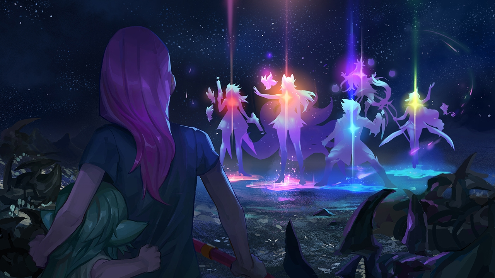

CAPITULO 7
Lluvia de estrellas
La luz de mi bastón es infinitamente mejor que la de una linterna, pero eso no apacigua los latidos de mi corazón. Paro un momento para mirar mejor el mapa del campamento que llevo en la otra mano. Por desgracia, Lulu debe de haberse salido del camino en algún lado. Ya nos hemos alejado de los límites del campamento.
—Por aquí cerca hay un claro —comento—. Un deslizamiento de rocas ha cruzado el límite del resto del campamento.
—Parece un sitio genial para darle la bienvenida a las estrellas nuevas —jadea Jinx, sin aire por la elevación del terreno—. Estúpidas galletas.
—Vamos —alienta Poppy, sujetando con fuerza el martillo.
La distancia entre los árboles se amplía, hasta que por fin se convierte en una pradera completa. Cojo todo el aire que puedo. Jinx suelta un silbido suave.
El lugar es precioso.
Una niebla baja se ha posado como una colcha sobre la zona. Pequeñas rosas silvestres se esconden bajo las flores lunares. Arcos de pequeñas flores azules atraviesan la niebla y se alzan sobre ella. Peñascos de granito blancos atrapan los rayos de la luz de la luna y ocupan la oscura pradera como si fuera un campo de estrellas pedregoso. En el cielo, la lluvia de meteoritos acaba de comenzar.
Sentada en el centro de todo, sobre una manta a cuadros rojos y blancos de pícnic se encuentra nuestra pequeña peliverde, Lulu. Hasta ha traído las naranjas.
—Gracias a la Estrella Primigenia. Está aquí. —Una suave brisa aparta la neblina a medida que Janna sale de detrás de un alto pino a nuestro lado. Debe haber llegado desde el camino contrario del campamento. Incluso a ella le falta un poco el aire.
—¡Lux! —grita Lulu, y se pone de pie de un salto. No puedo evitar salir corriendo hacia ella. Corro tan rápido que el suelo tiembla. Espera, no... Dejo de correr, pero el suelo sigue temblando. Un brillo negro verduzco comienza a salir como venas enfermas por debajo de la neblina. Una vibración retumba al mismo tiempo que el brillo, ahora pulsante.
—Lulu. —Apenas puedo escucharme a mí misma con el profundo bramido de las rocas que se mueven bajo nosotras.
—No estamos solas. Llegan estrellas nuevas, Lux. —La inocencia de Lulu ha desaparecido de sus ojos. Me coge de la mano—. Las he visto en mis sueños.
A pesar de tenerla al lado, escucho su voz muy lejos. Como si todavía estuviera atrapada en ese sueño.
Jinx, Poppy y Janna rodean los límites de la pradera. La tierra sucumbe bajo mis pies.
—¡Atrás! —grito.
La advertencia llega demasiado tarde. Las grietas se convierten en fisuras profundas. La neblina se rasga y una horda de insectos negros del tamaño de un perro sale de ellas, desprendiendo una luz verde espeluznante.
Con el bastón en la mano reflejo un rayo de luz estelar a la criatura más cercana. La luz golpea a la criatura por debajo de su caparazón alado y estalla con una explosión asquerosa de fluorescente moco verde.
—Por la Estrella Primigenia —susurro—. Tienen alas.
Les grito a las demás.
—¡Tienen alas! ¡No podemos dejar que lleguen al campamento!
—¡Yuju! —Escucho a Jinx gritar de alegría por la contienda—. Shiro. Kuro. ¡¿Quién se siente feroz?! —Los misiles comienzan a aparecer incluso antes de que termine la frase—. Vamos, tapón, ha llegado la hora de aplastar bichos.
—No hace falta que me lo digas dos veces, caracohete —grita Poppy.
Veo a Janna alzarse unos metros del suelo.
Agárrate, Lulu.
Noto cómo me agarra la mano con más fuerza. La voz de Janna resuena por todo el campo.
—¡Por la tranquilidad!
Una ráfaga de viento expulsa la neblina de la pradera. Varias de las criaturas se ven atrapadas en el remolino y se estampan contra gruesos troncos de árboles. Ahora que la niebla no está veo que hay muchas más de estas horribles criaturas de las que pensaba. Este no es como los otros ataques. La situación nos sobrepasa.
—Mirad, ¡las nuevas estrellas! —grita Lulu.
Cinco luces recorren el cielo y van directas hacia nosotros. Sigo su trayectoria hasta que tocan tierra. Las luces se separan y llegan a la pradera en un aterrizaje perfecto de cinco puntas. Varias de las criaturas explotan con el impacto.
Cuando el polvo y el líquido desaparecen, casi se me desencaja la mandíbula del asombro.
Es Ahri y su séquito. Miss Fortune, Syndra, Ezreal, y hasta la chica callada del pelo menta.
—¿Eres una guardiana de las estrellas? —grito—. ¿Sois todas guardianas de las estrellas? —Nadie me escucha con el alboroto. Eso y que todo el mundo está escuchando a Ahri.
—Hora de brillar, señoritas —dice ella. Solo con su sonrisa podría iluminar la pradera—. Tú también, Ezreal.
Se mueven como una unidad eficiente y sincronizada. Miss Fortune alza una reluciente pistola blanca y dispara el primer tiro. La bala atraviesa a la criatura y golpea a la que está detrás. Es la primera vez que veo su sonrisa y doy gracias por no ser el centro de su atención. Ahri y Ezreal son como borrones de luz entrando y saliendo del combate. Las criaturas no son lo suficientemente rápidas como para seguir el ritmo. Ahri deja escapar una risita y le lanza un beso a uno de los monstruos más grandes. Pareciendo incluso más descerebrado que antes, comienza a caminar lentamente hacia ella y los orbes brillantes con los que juega. Su risita se detiene cuando le lanza un orbe a la criatura, que queda aniquilada tras una explosión de líquido oscuro.
Syndra duda, aunque solo un momento, y entra en el combate con tres de sus orbes. La sonrisa maníaca de las bolas no tiene nada que envidiarle a Kuro y Shiro. En el centro, la chica con el pelo verde levanta un largo bastón en el aire y canaliza luz estelar desde el cielo. Mientras la miro, mi acelerado corazón empieza a bajar el ritmo y respiro con más facilidad. Los orbes de Ahri alcanzan a la criatura sin problemas, haciendo que explote en una lluvia de trozos de caparazón negro y de moco bioluminiscente. Tan pronto como llegó el nuevo equipo, se acabó.
Ahri se frota la yema de los dedos mientras recoge sus orbes, evidentemente asqueada con el residuo de la criatura. Syndra hace malabares con sus orbes morados mientras su arrogancia casual la eleva por encima del caos.
—Y todo en una noche, ¿eh, Soraka? —dice Ezreal, guiñándole el ojo a la chica tímida—. Gracias por el chute de energía.
Soraka mantiene una sonrisa serena y asiente con entusiasmo a Ez.
Encantado con todo el entusiasmo, Ez me sonríe mientras su acompañante alado se mete con cuidado en su guantelete. Miss Fortune sopla el rastro de humo que sale de sus pistolas y los ignora a los dos.
El momento de tranquilidad se esfuma cuando el suelo empieza a temblar de nuevo. Antes de poder contar hasta dos, la tierra se quiebra, haciéndome caer. Me golpeo la cabeza contra un tronco y suelto un "ay". Intento sacudirme el quejido metálico atrapado en mi cabeza. Dejo de moverme cuando veo que la pradera empieza a ladearse, como si la estructura del tiempo y el espacio estuviesen deformándose delante de mí. El brillo verde ha vuelto más fuerte que antes.
—¡Lulu! ¡Jinx!
Busco a las chicas, pero todo lo que veo es el descomunal caparazón de lo que parece ser un insecto espacial del tamaño de dos elefantes saliendo de una grieta enorme del suelo.
Siento cómo la tierra se arruga y aparece un rayo de luz delante de mí. Un guantelete blanco me alcanza y me agarra la mano mientras la tierra empieza a ceder.
Es Ez.
—Te dije que te vería luego. —Su voz se ahoga en el caos—. Ese bicho interdimensional no va a volarse por los aires él solo. —El mundo se cae literalmente en pedazos y él sigue sonriendo—. ¿Preparada, luz estelar?
Asiento. Más preparada que nunca. Me levanta y me lanza hacia el cielo por encima del monstruo. Desde esta posición puedo verlos a todos.
Janna y Soraka retienen a una nueva horda de pequeños demonios que salen arrastrándose de las grietas más pequeñas. Ahri, Miss Fortune y Syndra acaban con esos primero mientras se abren paso para posicionarse mejor contra el grande. Aterrizo cerca de Lulu en el momento en que evita una de las muchas extremidades del monstruo y Pix lanza rayos a las criaturas pequeñas. Jinx y Poppy parecen estar discutiendo en el extremo del campo. Casi no puedo escucharlas con el alboroto.
—¿Que quieres que haga qué? —grita Jinx.
—El cohete. ¡Dispárame con el cohete! —responde Poppy gritando.
—¡Poppy! —Jinx abre la boca de sorpresa. Entonces aparece una sonrisa en su rostro y se agacha para abrazar a la chica bajita de pelo azul que está junto a ella—. Creía que nunca me lo pedirías.
Momentos después, Poppy, martillo en mano, monta un misil que se dirige hacia las babosas fauces de la criatura. El martillo golpea con un fuerte crujido. La criatura se tambalea. Se acabó su momento. Levanto mi varita y empiezo a canalizar luz estelar. Los afilados incisivos de la criatura intentan morder el aire con voracidad. Ve a Lulu a sus pies y abre la boca completamente.
Mi rayo de luz choca contra la criatura y sale de nuevo por la parte trasera de su cabeza. Un chorro de líquido tóxico empapa el terreno. La criatura chilla y empieza a derrumbarse.
Sus pesadas y agitadas extremidades están en las últimas y se desploman. Justo donde está Lulu. Miro a mi alrededor. No hay nadie más cerca. Avanzo y aparto a Lulu del camino. Pedazos de monstruo negro caen sobre mí.
Y después todo se vuelve negro.